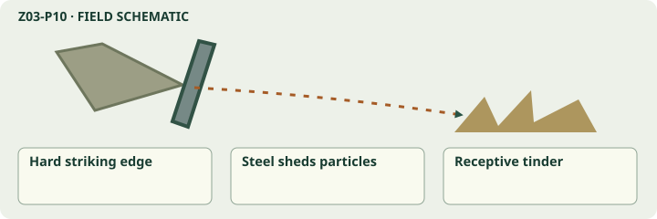

Z03-P10 · Fire and ignition
Identify the spark source in flint-and-steel
Explain what produces the spark in a traditional flint-and-steel kit.
When it applies · Interpretation or supervised demonstration outdoors at a currently authorized fire site.
Equipment · Identified traditional kit with suitable steel, a hard striking edge, prepared receptive tinder and fire-control equipment for any live demonstration.

Actions
- Identify the steel, hard edge and tinder receiver before arranging a demonstration. Use the documented kit rather than assuming two unknown stones will work.[C10, ED]
- Trace the spark origin. The hard edge removes small steel particles, which heat and burn. The receiving tinder must be able to accept brief hot particles.[C10]
- Keep a live demonstration separate from an equipment inspection. Skip live ignition unless current rules, conditions, supervision and extinguishing arrangements permit it.[C01, C02, C04, ED]
Verify · Point to the steel particle path between striking edge and tinder. Confirm which component sheds the burning particle.[C10, ED]
Stop or change course · If material identity or site control is uncertain, discuss the schematic with the equipment cold.[C02, C10, ED]
Evidence and editorial notes
- C01 · Minnesota DNR · Fire Danger and Burning Restrictions
- Fire danger and burning restrictions map and links · Current Minnesota location, date and jurisdiction
Check current restrictions and local authority requirements before lighting.
Primary source · checked 2026-11-24 - C02 · USDA Forest Service / Smokey Bear · Smokey Bear’s Campfire Safety Guide
- Build your campfire; choose a location · Where campfires are currently permitted
Use an established fire ring where required or available. Protect the area from nearby combustible materials, avoid windy conditions and keep water ready.
Primary source · checked 2026-11-24 - C04 · USDA Forest Service / Smokey Bear · Smokey Bear’s Campfire Safety Guide
- Maintain and extinguish a campfire · Occupied campfire, water and tools available
Stay with the fire. Drown, stir and add water again until cool. Leaving visible embers or merely covering them is unsafe.
Primary source · checked 2026-11-24 - C10 · NPS · Flint and Steel at Pipe Spring National Monument
- What > Firemaking with flint and steel · Historical hard stone and suitable steel demonstration
With traditional flint-and-steel, the flint removes small particles of steel that oxidize in air; a receptive tinder material catches the hot particles.
Primary source · checked 2026-11-24
Source lineage · Gate A physics check and NPS Pipe Spring demonstration; new manuscript.